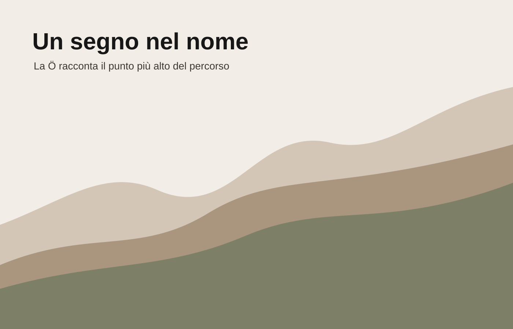

Nome
Stracrösa suona come una strada locale, memorabile, con un carattere territoriale forte.
Il progetto
Non una semplice mappa di cantine, ma un racconto territoriale: il vino diventa il filo che unisce quote, filari, borghi e tavole.

La Ö modificata non aggiunge un simbolo esterno. Trasforma un dettaglio tipografico in un’indicazione di quota: due punti a livelli diversi, collegati come una piccola traccia di percorso.
La scelta mantiene il marchio pulito e minimale, coerente con una comunicazione contemporanea del vino, senza ricorrere a grappoli, bicchieri o colline disegnate.
Stracrösa suona come una strada locale, memorabile, con un carattere territoriale forte.
La Ö diventa il culmine visivo e concettuale del percorso.
Essenziale, caldo, non turistico: più vicino a un racconto di territorio che a una brochure.